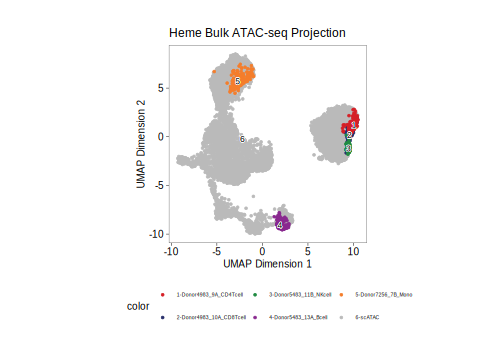

20.1 Projecting bulk ATAC-seq data
Projection of bulk ATAC-seq data into a single-cell dimensionality reduction is handled by the projectBulkATAC() function. This function accepts a SummarizedExperiment object containing the relevant bulk ATAC-seq data, subsets this object based on overlap of the peak regions in the bulk ATAC-seq SummarizedExperiment and single-cell ArchRProject, simulates sub-sampled “pseudocells”, and projects these pseudocells into the specified dimensionality reduction and embedding. A “pseudocell” is a downsampled representation of a bulk ATAC-seq library
To get the projectBulkATAC() function to work, the SummarizedExperiment object must be properly formatted. In particular, there needs to be an assay named “counts” containing the raw counts for each peak (row) for each sample (column). The rowRanges can be any peak set and the projectBulkATAC() function will match those rows to the peakSet of your ArchRProject based on overlaps. This means that it is not required to have a counts matrix based on the exact same set of peaks as used in your ArchRProject, enabling projection of bulk ATAC-seq data analyzed previously, for example from publicly available sources.
Below, we demonstrate the core functionality of projectBulkATAC() using a data set of bulk ATAC-seq data from FACS-enriched hematopoietic cell types (Corces et al. Nature Genetics 2015). First, lets download the counts matrix from GEO and fix the column names to be more human readable.
#Download bulk ATAC-seq data and organize raw counts matrix
download.file(url = "https://ftp.ncbi.nlm.nih.gov/geo/series/GSE74nnn/GSE74912/suppl/GSE74912_ATACseq_All_Counts.txt.gz", destfile = "Corces_HemeAML_BulkATAC.txt.gz")
download.file(url = "https://jeffgranja.s3.amazonaws.com/ArchR/TestData/Corces_HemeAML_ReHeader.txt", destfile = "Corces_HemeAML_ReHeader.txt")
df <- read.table(file = "Corces_HemeAML_BulkATAC.txt.gz", header = TRUE, sep = '\t', stringsAsFactors = FALSE)
header <- read.table(file = "Corces_HemeAML_ReHeader.txt", header = TRUE, sep = '\t', stringsAsFactors = FALSE)
colnames(df) <- header$NewHeader
df[1:6,1:6]
## chr start end Donor4983_1A_HSC Donor4983_2A_MPP Donor4983_3A_LMPP
## 1 chr1 10025 10525 1 0 4
## 2 chr1 13252 13752 0 5 6
## 3 chr1 16019 16519 4 2 6
## 4 chr1 96376 96876 0 0 0
## 5 chr1 115440 115940 0 3 0
## 6 chr1 235393 235893 0 2 2Inspecting the first few rows and columns of this data.frame shows that the first three columns are actually the peak coordinates and the remaining columns represent the individual samples. Because of this, we need to strip out the peak information and create a separate GenomicRanges object to represent the peak regions.
bulk_gr <- GRanges(seqnames = df$chr, ranges = IRanges(start = df$start+1, end = df$end))
df <- df[,which(colnames(df) %ni% c("chr","start","end"))]
rownames(df) <- paste(bulk_gr)We don’t need all of the data in this counts matrix so for simplicity we will subset the counts matrix to only include a few cell types (columns) with data that is well-represented in our tutorial dataset.
colsToKeep <- c("Donor4983_10A_CD8Tcell",
"Donor4983_9A_CD4Tcell",
"Donor5483_13A_Bcell",
"Donor5483_11B_NKcell",
"Donor7256_7B_Mono")
df <- df[,colsToKeep]Now we are ready to create our SummarizedExperiment object using the raw counts and peak regions.
seBulk <- SummarizedExperiment(assays = SimpleList(counts = as.matrix(df)), rowRanges = bulk_gr)
seBulk
## class: RangedSummarizedExperiment
## dim: 590650 5
## metadata(0):
## assays(1): counts
## rownames(590650): chr1:10026-10525 chr1:13253-13752 ...
## chrX:154912442-154912941 chrX:155259861-155260360
## rowData names(0):
## colnames(5): Donor4983_10A_CD8Tcell Donor4983_9A_CD4Tcell
## Donor5483_13A_Bcell Donor5483_11B_NKcell Donor7256_7B_Mono
## colData names(0):To project these bulk samples using projectBulkATAC(), we specify the reducedDims and embedding we want to use as well as the number of “pseudocells” we want to project.
bulkPro <- projectBulkATAC(ArchRProj = projHeme5,
seATAC = seBulk,
reducedDims = "IterativeLSI",
embedding = "UMAP",
n = 250)
## ArchR logging to : ArchRLogs/ArchR-projectBulkATAC-1a1cff0c1c-Date-2025-01-23_Time-23-32-57.421948.log
## If there is an issue, please report to github with logFile!
## Overlap Ratio of Reduced Dims Features = 0.99084
## 2025-01-23 23:32:58.020513 :
## 23:33:06 Creating temp directory /tmp/RtmpLozqnR/dir1a118e17bce
## untar: using cmd = '/usr/bin/tar -xf '/workspace/ArchR/ArchR_Website_Testing/bookdown/Save-ProjHeme1/Embeddings/Save-Uwot-UMAP-Params-IterativeLSI-1a14b0e7d95-Date-2025-01-23_Time-20-13-46.56756.tar' -C '/tmp/RtmpLozqnR/dir1a118e17bce''
## 23:33:10 Read 6250 rows and found 30 numeric columns
## 23:33:10 Processing block 1 of 1
## 23:33:10 Writing NN index file to temp file /tmp/RtmpLozqnR/file1a1675bf888
## 23:33:10 Searching Annoy index using 8 threads, search_k = 3000
## 23:33:10 Commencing smooth kNN distance calibration using 8 threads with target n_neighbors = 30
## 23:33:10 Initializing by weighted average of neighbor coordinates using 8 threads
## 23:33:10 Commencing optimization for 67 epochs, with 187500 positive edges
## 23:33:10 Finished
## ArchR logging successful to : ArchRLogs/ArchR-projectBulkATAC-1a1cff0c1c-Date-2025-01-23_Time-23-32-57.421948.log
bulkPro
## List of length 3
## names(3): simulatedBulkUMAP singleCellUMAP simulatedReducedDimsThe output of projectBulkATAC() is a list object containing 3 entries discussed below.
simulatedBulkUMAP is a DataFrame containing the embedding coordinates for the simulated “pseduocells”.
head(bulkPro$simulatedBulkUMAP)
## DataFrame with 6 rows and 3 columns
## UMAP1 UMAP2 Type
## <numeric> <numeric> <Rle>
## Donor4983_10A_CD8Tcell#1 9.37652 -0.2009891 Donor4983_10A_CD8Tcell
## Donor4983_10A_CD8Tcell#2 9.69217 0.4535988 Donor4983_10A_CD8Tcell
## Donor4983_10A_CD8Tcell#3 9.65991 -0.0697212 Donor4983_10A_CD8Tcell
## Donor4983_10A_CD8Tcell#4 9.65814 -0.0221541 Donor4983_10A_CD8Tcell
## Donor4983_10A_CD8Tcell#5 9.64607 0.1114746 Donor4983_10A_CD8Tcell
## Donor4983_10A_CD8Tcell#6 9.46927 -0.2376311 Donor4983_10A_CD8TcellsingleCellUMAP is a DataFrame containing the embedding coordinates for all of the original single-cells in your ArchRProject.
head(bulkPro$singleCellUMAP)
## DataFrame with 6 rows and 3 columns
## UMAP1 UMAP2 Type
## <numeric> <numeric> <Rle>
## scATAC_BMMC_R1#TTATGTCAGTGATTAG-1 -2.0100708 -0.463790 scATAC
## scATAC_BMMC_R1#AAGATAGTCACCGCGA-1 8.3619858 1.214364 scATAC
## scATAC_BMMC_R1#GCATTGAAGATTCCGT-1 -0.1737829 -9.489737 scATAC
## scATAC_BMMC_R1#TATGTTCAGGGTTCCC-1 -0.1669594 -7.583627 scATAC
## scATAC_BMMC_R1#TCCATCGGTCCCGTGA-1 -0.0378193 -8.868483 scATAC
## scATAC_BMMC_R1#AGTTACGAGAACGTCG-1 -2.8937029 0.609718 scATACsimulatedReducedDims is a DataFrame containing the coordinates in the given reduced dimensions (i.e. “IterativeLSI”) for each of the simulated “pseudocells”.
head(bulkPro$simulatedReducedDims[,1:5])
## LSI1 LSI2 LSI3 LSI4 LSI5
## Donor4983_10A_CD8Tcell#1 -4.625283 1.686137 -0.5859489 -0.16511159 0.5173089
## Donor4983_10A_CD8Tcell#2 -4.655096 1.604512 -0.3136310 -0.22394294 0.4209449
## Donor4983_10A_CD8Tcell#3 -4.677772 1.683076 -0.5080028 -0.01157532 0.5635535
## Donor4983_10A_CD8Tcell#4 -4.631163 1.706387 -0.4764640 -0.02528689 0.4869747
## Donor4983_10A_CD8Tcell#5 -4.643288 1.659233 -0.5008208 -0.17292483 0.3627571
## Donor4983_10A_CD8Tcell#6 -4.614042 1.690643 -0.3981789 -0.01228556 0.6056827Once we have the output of projectBulkATAC(), we often just want to plot this data to see where in our embedding the simulated “pseudocells” fall. There are many ways to do this but the easiest is to just concatenate the data from projectBulkATAC(), create a color palette, and use ggPoint() to plot.
#concatenate single-cell and pseudocell embedding positions
pro_df <- rbind(bulkPro$singleCellUMAP, bulkPro$simulatedBulkUMAP)
#create a color palette and force the scATAC cells to be grey to enable visualization of the project bulk ATAC data
pal <- paletteDiscrete(values = unique(as.character(pro_df$Type)), set = "stallion")
pal["scATAC"] <- "#BABABA"
#plot using ggPoint
ggPoint(x = pro_df$UMAP1,
y = pro_df$UMAP2,
discrete = TRUE,
color = as.character(pro_df$Type),
pal = pal,
xlabel = "UMAP Dimension 1",
ylabel = "UMAP Dimension 2",
title = "Heme Bulk ATAC-seq Projection")
In the resulting projection UMAP plot, you can see that the bulk ATAC-seq pseudocells pile up in the regions occupied by the corresponding single-cells.
At this point in the tutorial, we are done modifying our ArchRProject so lets save it one last time to make sure all of our changes are saved on disk. We will just save it on top of our previous projHeme5 directory.
projHeme5 <- saveArchRProject(ArchRProj = projHeme5, outputDirectory = “Save-ProjHeme5”, load = TRUE)